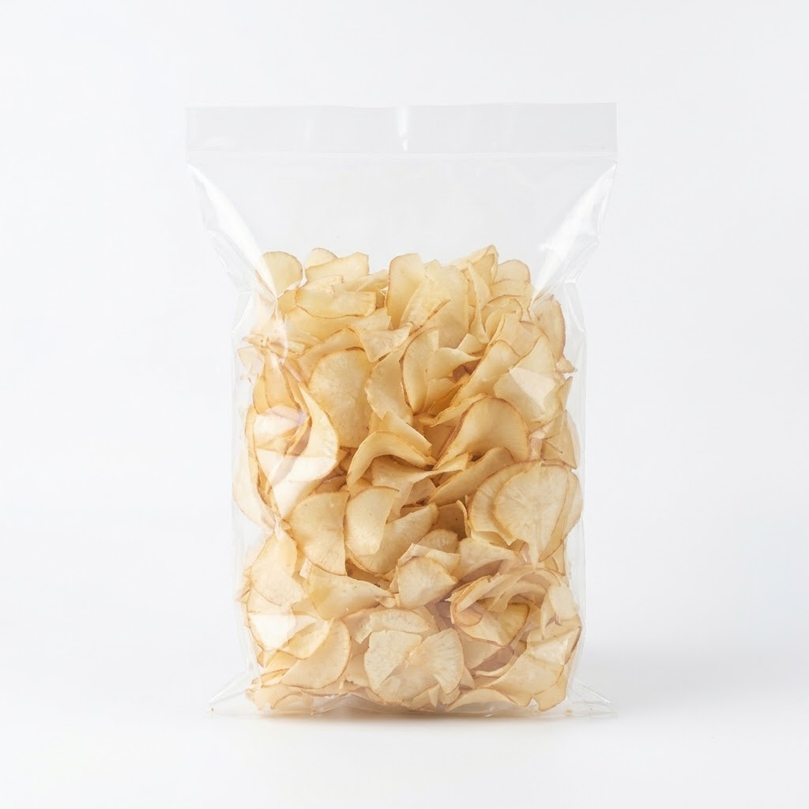
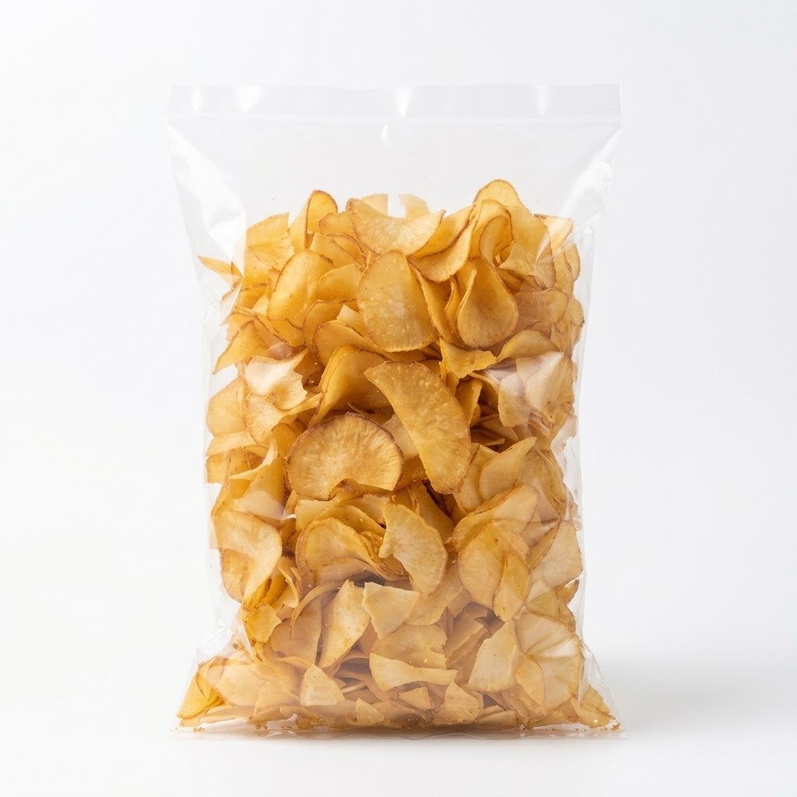
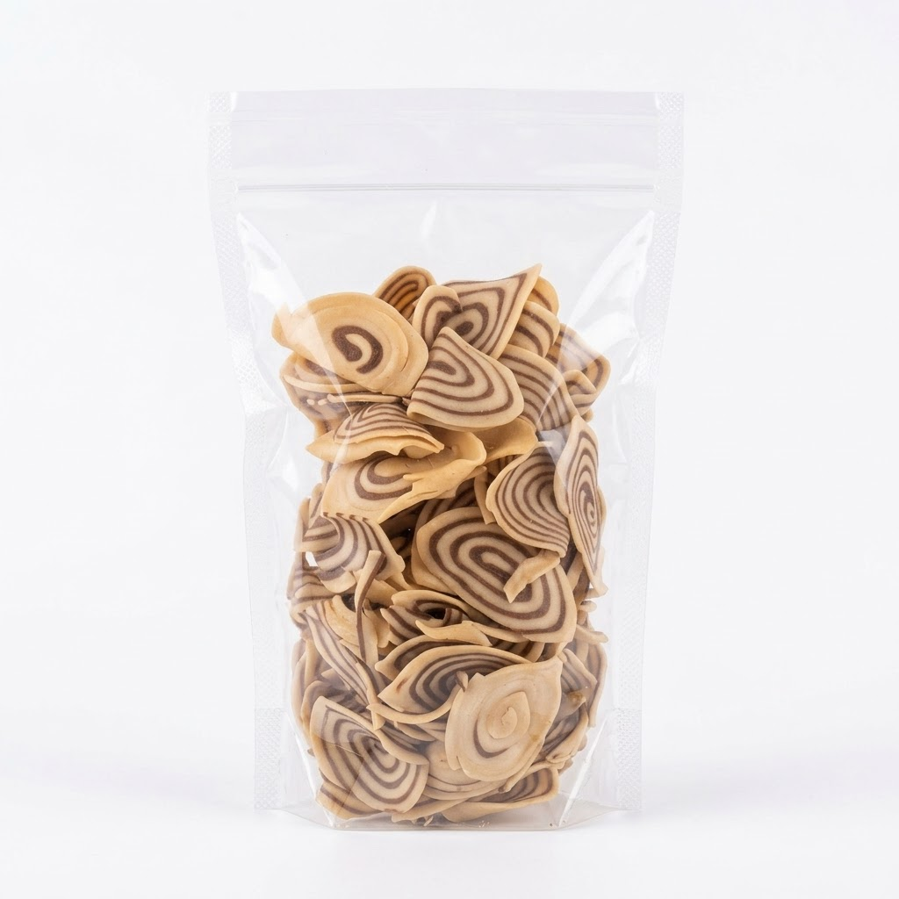
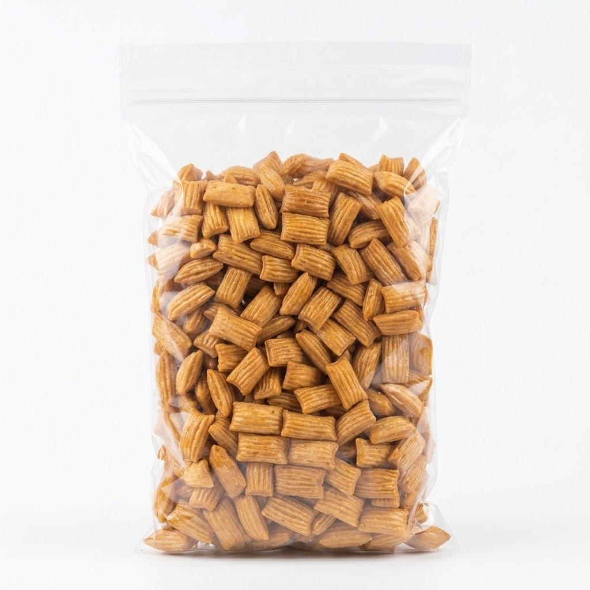

Pilihan camilan
Jelajahi katalog produk
Temukan beragam pilihan keripik dan oleh-oleh untuk menemani setiap momen istimewa.
Produk pilihan
Beragam pilihan camilan lezat untuk dinikmati bersama keluarga.



Produk tidak ditemukan. Coba kata kunci lain.